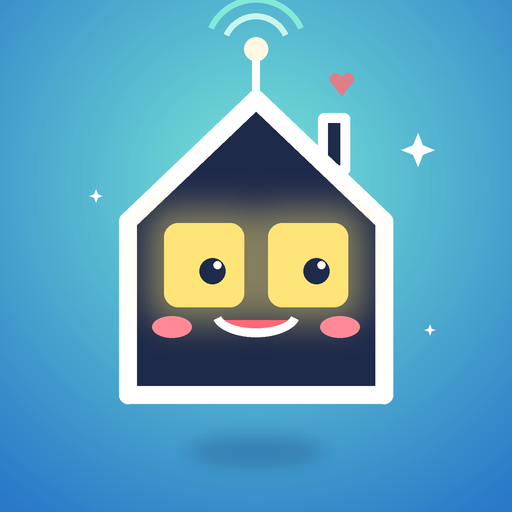

מה הבית יכול לעשות
שבת וחג
שעון שבת חכם שמכיר את זמני השבת והחגים לבד – בלי לכוון שעונים.
תאורה
אור רך בלילה, סצנות בלחיצה, ואורות שנכבים לבד כשאין אף אחד בחדר.
דוד
מים חמים כשצריך, לפי השמש ולפי הלו"ז שלכם – בלי לשכוח את הדוד דולק.
תריסים
תריסים שנפתחים בבוקר ונסגרים בערב, או בלחיצה אחת מהטלפון.
ניקיון
שואב רובוטי שמנקה כשאתם לא בבית, חדר אחרי חדר.
נוחות והתראות
טמפרטורה ולחות בכל חדר, והתראה לטלפון כשמשהו דורש תשומת לב.
הדגמות
כאן יופיעו צילומי מסך וסרטונים קצרים מבית אמיתי. בינתיים: לבית הדמו.
איך זה עובד
- שיחת היכרות – מה מפריע לכם בבית ומה הייתם רוצים שיקרה לבד.
- תכנון – הצעה מותאמת לבית שלכם, בלי חבילות שלא צריך.
- התקנה – מכשירים מוגדרים מראש, כך שיום ההתקנה קצר ונקי.
- הדרכה – אפליקציה בעברית, ומתגים רגילים שממשיכים לעבוד.
- ליווי – תמיכה ועדכונים מרחוק, וגיבוי קבוע של ההגדרות.
מי אני

יניב אלירז
אבא לשלושה מירושלים. שנים של עבודה בייצור ביוטכנולוגי לפי תקני GMP לימדו אותי לעבוד מסודר, מתועד ובטוח. את הבית שלי הפכתי לבית חכם – ועכשיו אני עושה את זה גם אצלכם.
שאלות נפוצות
מה קורה כשאין אינטרנט?
הבית ממשיך לעבוד. המערכת רצה על מחשב קטן בבית, לא בענן.
צריך מנוי חודשי?
לא. אפשר לבחור ליווי שוטף, אבל הבית לא תלוי בו.
המתגים הרגילים ממשיכים לעבוד?
כן. כל מי שבבית – גם אורחים וסבים – מדליק ומכבה כרגיל.
מה אם משהו מפסיק לעבוד?
רוב התקלות אני מטפל בהן מרחוק, וההגדרות מגובות.
איפה אתה עובד?
ירושלים והסביבה.
עבודות שדורשות חשמלאי מבוצעות רק על ידי חשמלאי מוסמך. המערכת שולחת התראות ואינה מבטיחה מניעת נזק.